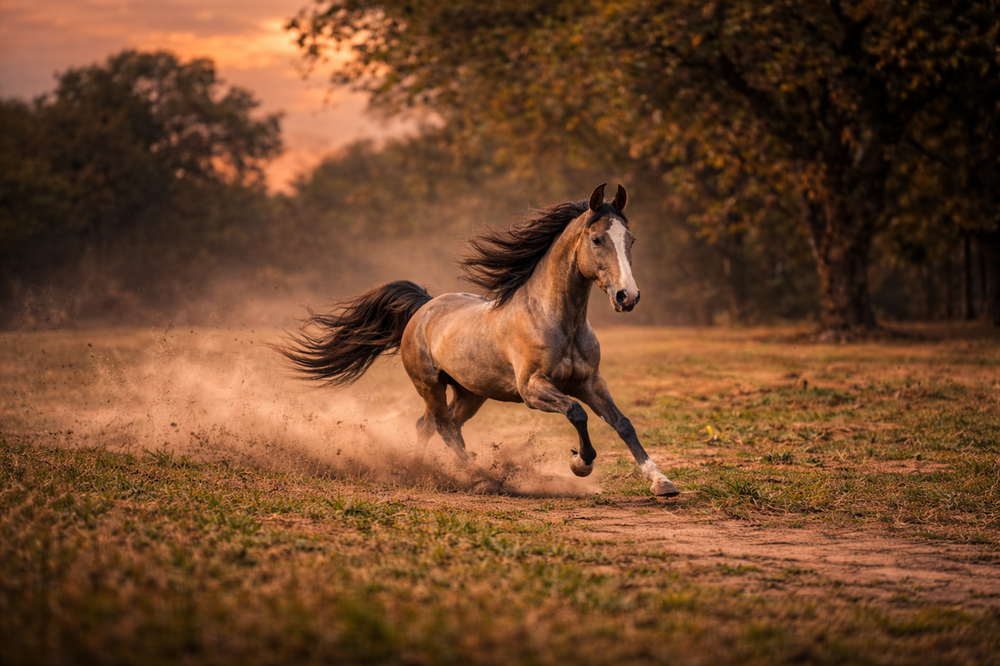

A hardy Indian breed adapted to desert climates.
The Kathiawari horse is an Indian breed known for its endurance and heat tolerance. It is very similar to the Marwari horse and is native to Gujarat.
Gujarat, India
14 – 15 hands
23 – 28 years
Hardy & Loyal
Kathiawari horses developed in the Kathiawar region of Gujarat. They are known for their endurance, speed, and ability to survive in harsh environments.
Kathiawari horses usually cost between ₹1,50,000 – ₹10,00,000 depending on training and pedigree.